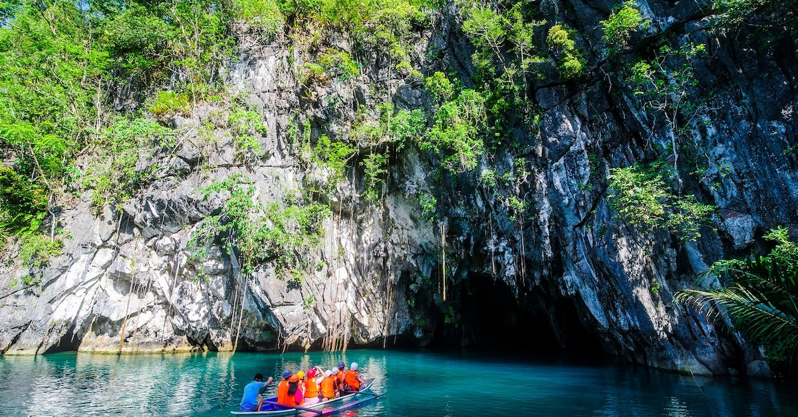

Luneta Park
Rizal Park's history began in 1820 when the Paseo de Luneta was completed just south of the walls of Manila on a marshy patch of land next to the beach during the Spanish rule. Prior to the park, the marshy land was the location of a small town called Nuevo Barrio ("New Town" or Bagumbayan in Tagalog) that dates back to 1601. The town and its churches, being close to the walled city, were strategically used as cover by the British during their attack. The Spanish authorities anticipated the danger posed by the settlements that immediately surrounded Intramuros in terms of external attacks, yet Church officials advocated for these villages to remain. Because of the part they played during the British Invasion, they were cleared after the short rule of the British from 1762 to 1764. The church of Bagumbayan originally enshrined the Black Nazarene. Because of the order to destroy the village and its church, the image was then transferred to San Nicolas de Tolentino inside Intramuros, with a copy then translated to Quiapo Church. This has since been commemorated by the Traslación of the relic every January 9, which is more commonly known as the Feast of the Black Nazarene. This is why the processions of January 9 have begun there in the park beginning in 2007. After the clearing of the Bagumbayan settlement, the area later became known as Bagumbayan Field where the Cuartel la Luneta (Luneta Barracks), a Spanish Military Hospital (which was destroyed by one of the earthquakes of Manila), and a moat-surrounded outwork of the walled city of Manila,known as the Luneta (lunette) because of its crescent shape.
Fort Santiago
Fort Santiago is the oldest Spanish bastion in the Philippines. Situated inside the walled city of Intramuros in Manila, the site witnessed many historical events of the Philippines. The exact spot where Fort Santiago now stands was once a Muslim kingdom ruled by a chieftain named Rajah Sulayman. When the Spaniards landed in the Philippines in 1571, they destroyed the site and built a fortress instead, naming it after Spain’s patron saint, Saint James (Santiago in Spanish). The structure served as their defense fortress. The original fort was made of logs and soil but was torn down by Chinese pirates under the command of Limahong in 1574. It was rebuilt using carved stones and mud cement between 1589 and 1592, but a terrible earthquake in 1645 damaged most parts of the structure again. The Spaniards then reconstructed the fortress from 1658 to 1663. In 1762, the British came and ruled until 1764, using Fort Santiago as their headquarters. The Americans then arrived in 1778 and renovated the fort which became a U.S Army Philippines Division Command Center. And in 1942 during World War II, the Japanese conquered the Philippines and made use of the fort as their military base and prison. It is said that they have imprisoned and tortured about 2,500 to 3,000 Filipinos and Americans in the site. In 1945, the U.S Liberation Forces came and fought against the Japanese, causing severe damage to the fort. It then served as a depot of the U.S. Transportation Corps later on. The U.S Military turned over the bastion to the Philippine Government in 1946, and it was announced as a Shrine of Freedom in 1950. A year later, the National Park Development Committee restored the fort and transferred it to the Intramuros Administration in 1992.
Intramuros
Intramuros (Latin for "inside the walls") is the 0.67-square-kilometer (0.26 sq mi) historic walled area within the city of Manila, the capital of the Philippines. It is administered by the Intramuros Administration with the help of the city government of Manila. Present-day Intramuros comprises a centuries-old historic district, entirely surrounded by fortifications, that was considered at the time of the Spanish Empire to be the entire City of Manila. Other towns and arrabales (suburbs) located beyond the walls that are now districts of Manila were referred to as extramuros, Latin for "outside the walls", and were independent towns that were only incorporated into the city of Manila during the early 20th century. Intramuros served as the seat of government of the Captaincy General of the Philippines, a component realm of the Spanish Empire, housing the colony's governor-general from its founding in 1571 until 1865, and the Real Audiencia of Manila until the end of Spanish rule during the Philippine Revolution of 1898. The walled city was also considered the religious and educational center of the Spanish East Indies. The original campuses of the University of Santo Tomas, the oldest university in Asia, and the Ateneo de Manila, were in Intramuros before transferring in 1927 and 1932 respectively; today the area still contains the main campuses of the University of the City of Manila, the Colegio de San Juan de Letran, Mapúa University, Philippine Nautical Training Colleges, the Colegio de Santa Rosa, and the Manila High School. Intramuros was also an economic center; its port in what is now Plaza Mexico was the Asian hub of the Manila galleon trade, carrying goods to and from Acapulco in what is now Mexico. Construction of the Spanish walled city began under the orders of the Spanish imperial government in the late 16th century to protect the city from foreign invasions, replacing the old prehispanic settlement of Maynila along the shores of Manila Bay, by the entrance to the Pasig River. Near the mouth of the Pasig River is Fort Santiago, which, along with a series of bulwarks and gates, fortified the city from repeated invasions. During the early 20th century, under the administration of American colonial authorities, land reclamation and the construction of the Manila South Port subsequently moved the coastline westward and obscured the walls and fort from the bay, while the moat surrounding the fortifications was drained and turned into a recreational golf course. The Battle of Manila in 1945 entirely flattened Intramuros. As the occupying Japanese Imperial Army made their last stand against the victorious efforts of Allied soldiers and Filipino guerrillas, heavy artillery bombardment destroyed its eight churches, walls, universities, houses, and government buildings constructed for centuries in Spanish colonial architecture; only the San Agustín Church, the oldest standing church in the Philippines, survived intact and was later made a UNESCO World Heritage Site. Though reconstruction efforts began immediately after the war, many of its original landmarks are still lost today; under the Intramuros Administration, Intramuros is still in the process of postwar reconstruction and revival of its cultural heritage.
National Museum of fine arts

The National Museum of Fine Arts is an art museum in Manila, Philippines that houses a collection of paintings and sculptures by classical Filipino artists. Founded in 1998, it was formerly known as the National Art Gallery, and is owned and operated by the National Museum of the Philippines. It is located on Padre Burgos Avenue across from the National Museum of Anthropology. Its collection includes works by artists such as Juan Luna, Félix Resurrección Hidalgo and Guillermo Tolentino. The building was originally designed as the public library by Ralph Harrington Doane, the American consulting architect of the Bureau of Public Works, and his assistant Antonio Toledo. Construction began in 1918 but was suspended several times because of lack of funds. The building was inaugurated on 16 July 1926, and by then had cost four million pesos. The building was part of Daniel Burnham's plan for the development of Manila. Upon its completion, the second, third, and fourth floors were occupied by the Senate and House of Representatives while the ground floor was occupied by the National Library. The National Museum of the Philippines (Filipino: Pambansang Museo ng Pilipinas) is an umbrella government organization that oversees a number of national museums in the Philippines including ethnographic, anthropological, archaeological, and visual arts collections. From 1973 until 2021, the National Museum served as the regulatory and enforcement agency of the government of the Philippines in the restoring and safeguarding of significant cultural properties, sites, and reservations throughout the Philippines. The mandate has since been transferred to the National Commission for Culture and the Arts. The National Museum operates the National Museum of Fine Arts, National Museum of Anthropology, and the National Museum of Natural History, all located in the National Museum Complex in Manila. The institution also operates branch museums throughout the country.The National Museum also established and operates regional museums across the Philippines: National Museum Eastern-Northern Mindanao (Butuan), National Museum Central Visayas Regional Museum (Cebu City), National Museum Western Visayas (Iloilo City), National Museum Western-Southern Mindanao (Zamboanga City), and National Museum Ilocos (Vigan City), to name a few.
Puerto Princesa underground river
Puerto-Princesa Subterranean River National Park encompasses one of the world’s most impressive cave systems, featuring spectacular limestone karst landscapes, pristine natural beauty, and intact old-growth forests and distinctive wildlife. It is located in the south-western part of the Philippine Archipelago on the mid western coast of Palawan, approximately 76 km northwest of Puerto Princesa and 360 km southwest of Manila. The property, comprising an area of approximately 22,202 ha, contains an 8.2km long underground river. The highlight of this subterranean river system is that it flows directly into the sea, with its brackish lower half subjected to tidal influence, distinguishing it as a significant natural global phenomenon. The river’s cavern presents remarkable, eye catching rock formations. The property contains a full mountain-to-sea ecosystem which provides significant habitat for biodiversity conservation and protects the most intact and noteworthy forests within the Palawan biogeographic province. Holding the distinction of being the first national park devolved and successfully managed by a local government unit, the park’s effective management system is a symbol of commitment by the Filipino people to the protection and conservation of their natural heritage.